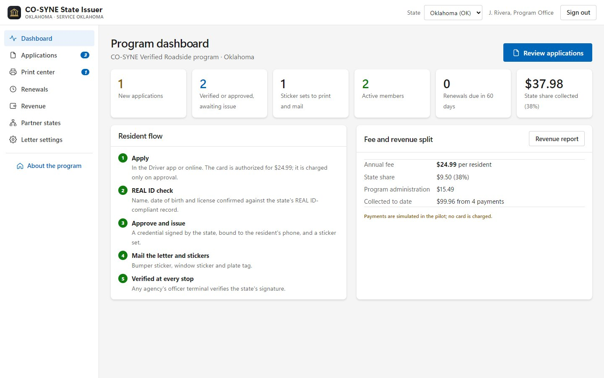

A verified roadside,
issued by your state.
A ready system to verify residents against REAL ID, issue state-signed credentials and QR sticker sets, and verify drivers across state lines.
The traffic stop is where most residents meet law enforcement.
Your state already verified who every REAL ID holder is. CO-SYNE puts that verification to work at the roadside.
Sources: Stanford Open Policing Project; U.S. Bureau of Justice Statistics, Contacts Between Police and the Public, 2020.
From application to a verified stop.
The State Issuer Console.
- Application queue with REAL ID checks and full history
- Print center: letters and sticker sets, single or batch
- Renewals and automatic reminders
- Revoke and reissue; old codes stop working at once
- Revenue by month and county, with CSV export
Live at iobeacons.com/cosyne/state. REAL ID checks and payments are simulated until connected to state systems.

Three pieces, one QR code, nothing personal on the vehicle.
 CO-SYNE VERIFIED STOPWindow sticker · 4 × 4 inCO-SYNEPlate tag · 2 × 2 in
CO-SYNE VERIFIED STOPWindow sticker · 4 × 4 inCO-SYNEPlate tag · 2 × 2 inThe code holds only a link. Officers scan from the patrol car; the resident's phone alerts them.
Illustration. Sample codes open the Driver app.
It builds on the verification your state already did.
CO-SYNE works alongside REAL ID. It is not endorsed or approved by DHS or any state and does not replace a license.
For $24.99 a year, a safer, clearer stop.


Revenue, safety and trust, with no system to build.
$24.99 a year. 38% to the state.
Illustrative: enrollments × 38% of $24.99 ($9.4962). Not a forecast. Administration covers the platform, issuance, printing and mailing, payments, support and renewals.
From agreement to interstate in five phases.
Each phase advances on results and readiness, not fixed dates.
Who does what.
| State DMV | Owns the program and issuer key; approves and signs credentials. |
| State DOT / highway safety | Aligns with safety plans, grants and corridor partners. |
| State police and local agencies | Equip patrol units and run verified stops. |
| Dispatch / 911 | See stops and alerts live; join when needed. |
| CO-SYNE | Runs the platform, payments, printing and mailing, support and training. |
| Residents | Opt in, apply, place stickers, renew yearly. |
Each state signs its own credentials. There is no national database.
Adding a state means adding an issuer, not merging records. Running today with Oklahoma and Texas demonstration issuers.
The same model for DHS and other agencies.
Possible partnerships. No federal or tribal agency has endorsed or adopted CO-SYNE.